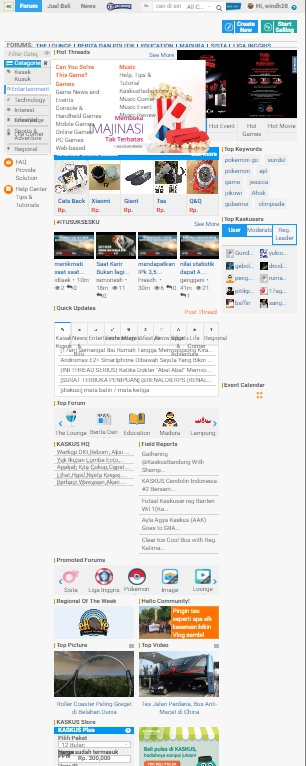

kaskus.co.id
Kaskus merupakan salah situs forum terbesar di Indonesia saat ini, di dalamnya ada berbagai informasi yang di bagi menjadi berbagai macam kategori dari lounge hingga forum jual-beli.
Informasi yang terdapat dalam kaskus dibagi menjadi banyak kategori, salah satunya adalah forum programmer, dalam forum tersebut seseorang dapat bertanya mengenai masalah apa yang sedang dihadapi mengenai programming dan tentunya ada thread yang memberikan tutorial-tutorial tentang programming
Pada setiap kategori memiliki hal-hal yang menarik. Hot Thread adalah thread yang terpilih oleh admin kaskus.
keren, menarik, warna sesuai, konten penuh, informatif
informatif, update, lucu, serius, berita
Ketika melihat tampilan utama / homepage kaskus, maka ada menu sidebar yang akan membimbing kita untuk ke forum yang dituju, dan pada di tengah header ada searchbox agar kita bisa menggunakan keyword untuk mencari sesuatu.
Menu navigasi di dalam website kaskus sangat mudah untuk digunakan karena di setiap page terdapat menu navigasi sehingga jika ingin browsing semua konten bisa menggunakan menu navigasi.
Pada saat waktu luang saya sering mengakses kaskus dan saya merasa senang karena ada banyak thread humor sehingga saya tidak bosan.
Yaa saya pernah membeli dan menjual dari forum jual beli yang ada di kaskus, karena bisa cash on delivery dan mengecek barang tersebut sebelum transaksi pembayaran. Hal tersebut cukup penting karena pada jual beli online terkadang barang tidak sesuai dengan apa yang ditawarkan.